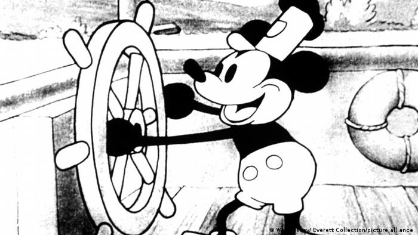
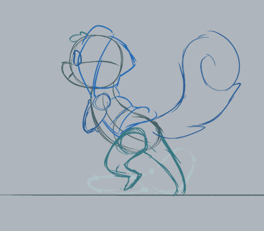
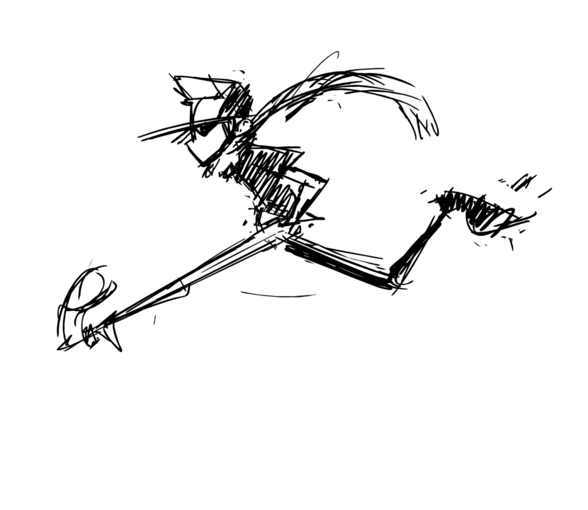

Kunst der Animation (Von Colin Güldenbeck)
Enstehung
Die Animationsbranche wie wir sie kennen hat einen weiten Weg hinter sich ,denn Die Zeichentrickfilmindustrie begann ungefähr nach dem ersten Weltkrieg so richtig,weil die Filmindustrie immer grösser wurde mit grossen Firmennamen wie Warner.bros oder Walt disney studios wurde alles immer grösser.Man kann Walt disney in dem Fall noch besonders hoch heben ,weil er mit seinem Animationstudio sehr viel beigetragen hat. Er hat mit seinem Team zum Beispiel sehr viele Figuren erfunden welche wir heute immer noch kennen wie zum beispiel Mickey Mouse
Wie funkzioniert eine Animation?
Eine Animation ist im Grunde nichts weiter als eine Ilusion welche dadurch entsteht das man viele Bilder schnell hintereinander abspielt.Das Gehirn nimmt diese Bilder wenn sie zu einander passen als eine Bewegung war. Damit eine Animation für den Verstand flüssig erscheint müssen mindestens 12 Bilder in einer Sekunde gezeigt werden ,der Fachbegriff dazu lautet Frames Per Second oder auch FPS. das hat ,aber leider zufolge das ein neunzig minütiger Zeichentrickfilm ungefähr 64.800 bilder haben muss.
- ri
können sie hier an der Darstellung sehen
 Die Animations Pipeline
Die Animation Pipeline ist so zusagen eine art Plan der genutzt wird um um einen animations Film oder Serie zu machen.Denn um eine vollständige Animationsserie zu machen würde es ungefähr 2 Jahre dauern .Die Pipeline wird dabei in mehrere Aufgaben geteilt die zur gleichen Zeit ausgeführt werden.
- Die Drehbuchschreiber sind einr der ersten Teile der pipeline denn schliesslich schreiben sie ja die Geschichte(danach wird natührlich auch das Skript geschrieben),zur selben Zeit werden übrigens auch die Charackterdesigns gemacht.
- Dannach wird das Storyboard gezeichnet welches sehr simple gezeichnet und animiert ist ,weil es nur dafür gemacht wird um zu viesualisieren. Es ist technisch gesehen eine art Comic .

- Und dannach kommt das Animationsteam und das Edeting.
Natührlich waren das nicht alle Abschnitte der Pipeline ,aber über alle zu reden würde ganz klar den Ramen sprengen
Die Stock Motion Animation
Eine andere Art der Animation ist die Stock Motion Animation welche etwas anders funkzioniert.Denn in der Stock Motion Animation werden reale Gegenstände und figuren benutzt und von diesen Figuren macht man ein Foto und bewegt sie etwas und man macht dann noch ein Foto
Hier das Video erklärt es tausend mal besser
 Wie man sehen kann wird die Bewegung des Bären dadurch erzeugt das mehrere Figuren benutzt und ausgetauscht werden .
Wie man sehen kann wird die Bewegung des Bären dadurch erzeugt das mehrere Figuren benutzt und ausgetauscht werden .